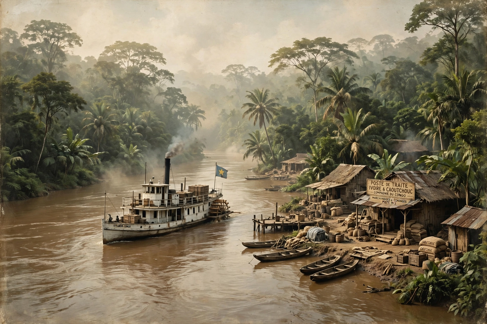

Belgian Congo
The Belgian Congo was a Belgian colony in Central Africa from 1908 until independence in 1960, becoming the Republic of the Congo (Léopoldville) and later Zaire and the Democratic Republic of the Congo. Belgium annexed the Congo Free State, the privately controlled territory of King Leopold II, after international outrage over atrocities committed under his rule.
| Belgian Congo | |
|---|---|
 | |
| Status | Colony of Belgium |
| Period | 15 November 1908 – 30 June 1960 |
| Capital | Boma (to 1923), Léopoldville |
| Preceded by | Congo Free State |
From Free State to colony
Under the Congo Free State (1885–1908), forced labour for rubber and ivory caused a demographic catastrophe — estimates of excess deaths vary widely, with figures around 10 million popularised by Adam Hochschild's King Leopold's Ghost. The Casement Report (1904), Conrad's Heart of Darkness, and campaigning by the Congo Reform Association forced the Belgian state takeover in 1908.
Colonial rule
The Belgian administration, working through a 'trinity' of state, Catholic missions and large concession companies (Union Minière, Forminière), developed mining (Katanga copper, Kasai diamonds), infrastructure and comparatively extensive primary education and health services, while maintaining racial hierarchy, forced labour practices in attenuated forms, and virtually no Congolese political participation or higher education — only a handful of university graduates existed by 1960. The Force Publique remained the colonial army.
Independence
After riots in Léopoldville in January 1959 and rapid decolonisation, elections brought Patrice Lumumba's MNC to power; independence followed on 30 June 1960, King Baudouin's paternalistic speech being answered pointedly by Lumumba. The Congo Crisis — army mutiny, Katanga secession under Moise Tshombe, and Lumumba's dismissal and murder (1961, with Belgian and US involvement documented later) — followed immediately.
See also
Recreated from memory for muse-webcrawl.